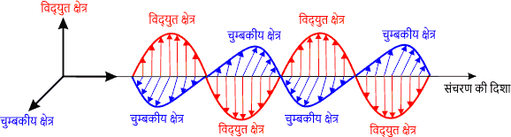
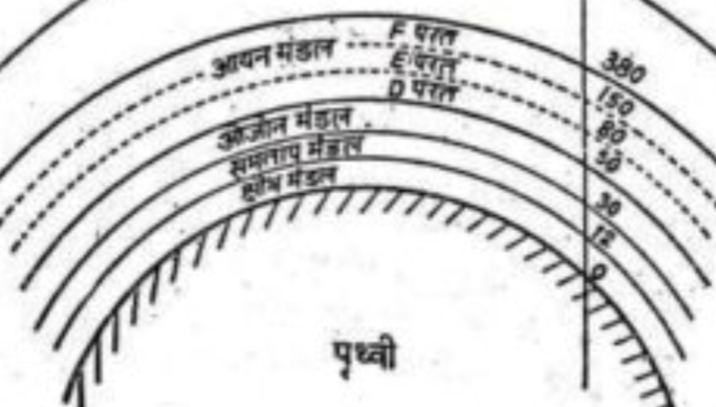
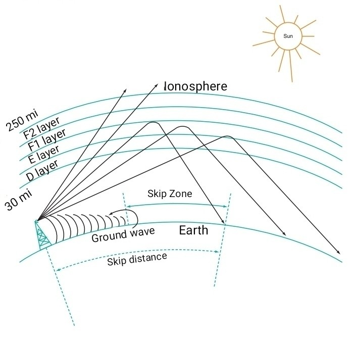
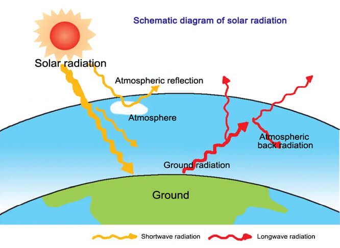
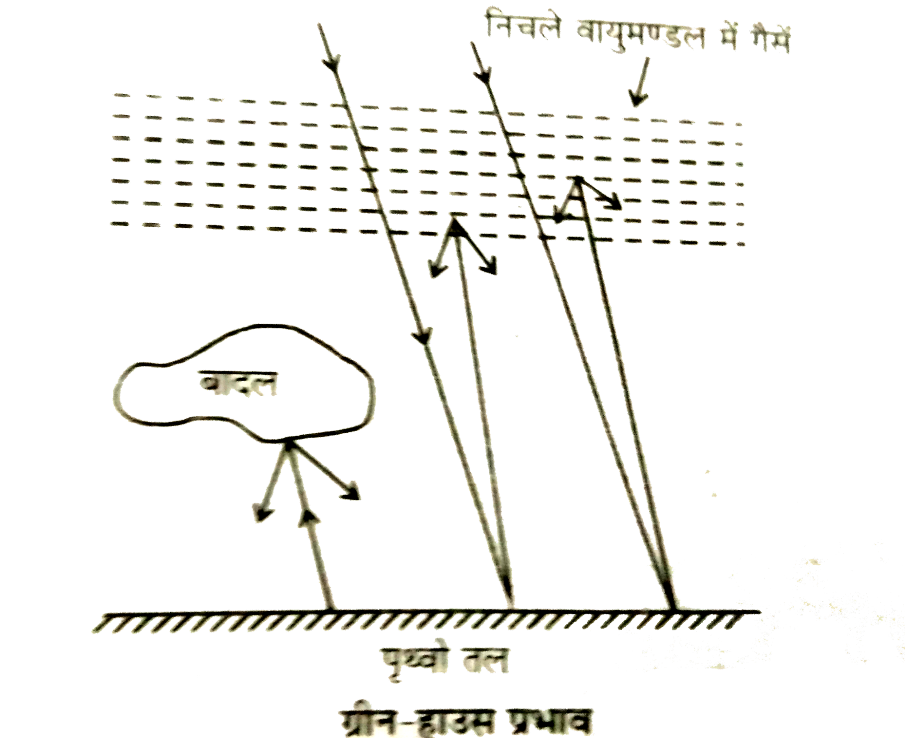
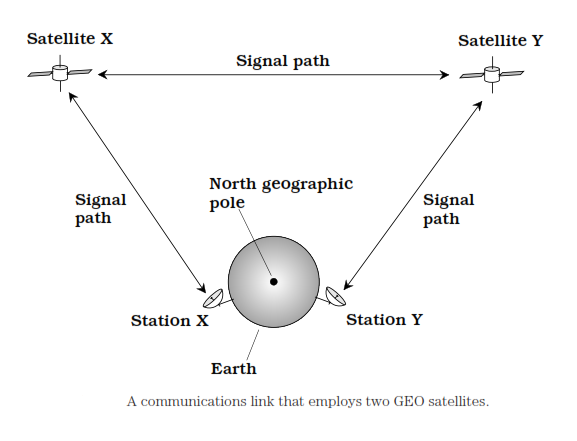

📘 Unit 5 - विद्युत चुम्बकीय तरंगें
प्रश्न: विद्युत चुम्बकीय तरंगें क्या हैं? उनकी विशेषताएँ लिखिए।
जब विद्युत क्षेत्र और चुंबकीय क्षेत्र आपस में एक-दूसरे के लम्बवत तथा तरंग के प्रसार की दिशा के भी लम्बवत होते हुए अंतरिक्ष में ऊर्जा का संचार करते हैं, तो उसे विद्युत चुंबकीय तरंग कहते हैं।
इनका निर्माण तब होता है जब कोई आवेश त्वरित गति करता है।
विशेषताएँ
इनका निर्माण तब होता है जब कोई आवेश त्वरित गति करता है।

- ये तरंगें अनुप्रस्थ होती हैं।
- ये तरंगें विद्युत और चुंबकीय क्षेत्रों से अप्रभावित रहती हैं।
- इन्हें अपने प्रसार के लिए किसी भौतिक माध्यम की आवश्यकता नहीं होती है।
- विद्युत और चुंबकीय क्षेत्रों के दोलन एक ही कला में होते हैं।
- ये तरंगें मुक्त-अंतरिक्ष में प्रकाश की गति से यात्रा करती हैं।
- ये तरंगें परावर्तन, अपवर्तन, व्यतिकरण विवर्तन और ध्रुवीकरण के गुण प्रदर्शित करती हैं।
प्रश्न: विद्युत्-चुम्बकीय तरंगों के आविष्कारक कौन हैं?
मैक्सवेल।
प्रश्न: समष्टि में विद्युत् और चुम्बकीय क्षेत्र किस प्रकार संचरित होते हैं?
समष्टि में विद्युत् और चुम्बकीय क्षेत्र एक-दूसरे के लम्बवत् तथा तरंग संचरण की दिशा के लम्बवत् दोलन करते हुए संचरित होते हैं।
प्रश्न: विद्युत्-चुम्बकीय तरंगों में क्या दोलन करते हैं?
विद्युत्-चुम्बकीय तरंगों में विद्युत् क्षेत्र और चुम्बकीय क्षेत्र एक-दूसरे के तल के लम्बवत् तथा तरंग संचरण की दिशा के भी लम्बवत् दोलन करते हैं।
प्रश्न: विद्युत चुम्बकीय तरंगें कैसे उत्पन्न होती हैं?
विद्युत चुम्बकीय तरंगें समय-परिवर्तनशील चुंबकीय क्षेत्र या समय-परिवर्तनशील विद्युत क्षेत्र द्वारा उत्पन्न होती हैं।
प्रश्न: किस प्रकार का आवेश विद्युत चुम्बकीय तरंगें उत्पन्न कर सकता है?
त्वरित आवेश विद्युत चुम्बकीय तरंगें उत्पन्न कर सकता है।
प्रश्न: क्या विद्युत्-चुम्बकीय तरंगें विद्युत् क्षेत्र या चुम्बकीय क्षेत्र से विक्षेपित होती हैं?
नहीं।
प्रश्न: क्या विद्युत चुम्बकीय तरंगें ऊर्जा और संवेग ले जाती हैं?
हाँ, विद्युत चुम्बकीय तरंगें ऊर्जा और संवेग ले जाती हैं।
प्रश्न: विद्युत्-चुम्बकीय तरंगें अनुप्रस्थ हैं या अनुदैर्ध्य?
ये तरंगें अनुप्रस्थ होती हैं।
प्रश्न: समझाइए कि विद्युत् चुम्बकीय तरंगों की प्रकृति अनुप्रस्थ होती है।
विद्युत्-चुम्बकीय तरंगों में विद्युत् क्षेत्र और चुम्बकीय क्षेत्र दोनों तरंग संचरण की दिशा के लम्बवत् दोलन करते हैं। अतः विद्युत् चुम्बकीय तरंगों की प्रकृति अनुप्रस्थ होती है।
प्रश्न: निर्वात् में विद्युत्-चुम्बकीय तरंगों का वेग किस सूत्र द्वारा दिया जाता है?
निर्वात् में विद्युत्-चुम्बकीय तरंगों का वेग निम्नलिखित सूत्र द्वारा दिया जाता है—
\[
c = \frac{1}{\sqrt{\mu_0 \varepsilon_0}}
\]
जहाँ,
- \(c\) = निर्वात् में विद्युत्-चुम्बकीय तरंगों का वेग
- \(\mu_0\) = निर्वात् की चुंबकीय पारगम्यता
- \(\varepsilon_0\) = निर्वात् की विद्युत् पारगम्यता
प्रश्न: विद्युत् क्षेत्र और चुम्बकीय क्षेत्र के आयामों में सम्बन्ध लिखिए।
विद्युत्-चुम्बकीय तरंग में विद्युत् क्षेत्र (E) और चुम्बकीय क्षेत्र (B) के आयामों के बीच सम्बन्ध निम्नलिखित होता है—
\[
\frac{E_0}{B_0} = c
\]
जहाँ—
- \(E_0\) = विद्युत् क्षेत्र का आयाम
- \(B_0\) = चुम्बकीय क्षेत्र का आयाम
- \(c\) = निर्वात् में प्रकाश का वेग
प्रश्न: विद्युत् चुम्बकीय तरंग के किस गुण के कारण यह माना जाता है कि प्रकाश तरंगें विद्युत् चुम्बकीय तरंगें होती हैं?
प्रकाश तरंगों का वेग, विद्युत् चुम्बकीय तरंगों के वेग के बराबर होता है।
विद्युत चुम्बकीय तरंगें और ध्वनि तरंगों का अंतर
| क्र.सं. | विद्युत चुम्बकीय तरंगें | ध्वनि तरंगें |
|---|---|---|
| 1. | इनके संचरण के लिए माध्यम की ज़रूरत नहीं होती। | इनके संचरण के लिए माध्यम ज़रूरी होता है। |
| 2. | ये हमेशा अनुप्रस्थ होती हैं। | ये अनुदैर्ध्य होती हैं। |
| 3. | इनमें विद्युत व चुंबकीय क्षेत्र तरंग की दिशा के लंबवत दोलन करते हैं। | इनमें माध्यम के कण तरंग की दिशा में दोलन करते हैं। |
| 4. | इनकी गति निर्वात में हमेशा समान (\(3\times10^{8}\ \text{m/s}\)) होती है। | इनकी गति माध्यम के अनुसार बदलती है। |
प्रश्न: विद्युत चुंबकीय स्पेक्ट्रम किसे कहते है? समझाइए।
विद्युत चुंबकीय तरंगों का समग्र वितरण उनकी तरंगदैर्ध्य अथवा आवृत्ति के आधार पर किया जाता है, जिसे विद्युत चुंबकीय स्पेक्ट्रम कहते है।
इसमें निम्न विकिरण होते है।
इसमें निम्न विकिरण होते है।
| विकिरण | खोजकर्ता | तरंगदैर्ध्य | गुण | उपयोग |
|---|---|---|---|---|
| गामा किरणें | बैकुरल तथा क्यूरी | 0.001 Ao से 1 Ao (\(10^{-14}\) मीटर से \(10^{-10}\) मीटर) | अत्यधिक ऊर्जा वाली, गहरी प्रवेश शक्ति, अदृश्य | कैंसर उपचार, परमाणु अभिक्रियाओं का अध्ययन |
| एक्स किरणें | राजन | 1 Ao से 100 Ao (\(10^{-13}\) मीटर से \(10^{-8}\) मीटर) | ठोस वस्तुओं को भेदने की क्षमता, अदृश्य | हड्डी की जाँच, धातु व सामान की जांच, सुरक्षा जांच |
| पराबैगनी किरणें | रिटर | 100 Ao से 4000 Ao (\(10^{-8}\) मीटर से \(4\times10^{-7}\) मीटर) | जीवाणुनाशक, त्वचा पर प्रभाव डालती हैं | जल शुद्धिकरण, विटामिन D उत्पादन, चिकित्सीय उपयोग |
| दृश्य प्रकाश | न्यूटन | 4000 Ao से 7900 Ao (\(4\times10^{-7}\) मीटर से \(7\times10^{-7}\) मीटर) | मानव आंखों से दिखने वाला प्रकाश, रंगों का मिश्रण | देखने के लिए, ऑप्टिकल उपकरण, संचार (फाइबर ऑप्टिक्स) |
| अवरक्त किरणें | हरशेल | 7900 Ao से \(10^{7}\) Ao (\(4\times10^{-7}\) मीटर से \(10^{-3}\) मीटर) | ऊष्मा प्रभाव उत्पन्न करती हैं, अदृश्य | हीटर, नाइट विजन कैमरे, रिमोट कंट्रोल |
| सूक्ष्म तरंगे | मैक्सवेल | \(10^{7}\) Ao से \(10^{10}\) Ao (\(10^{-3}\) मीटर से 0.30 मीटर) | उच्च आवृत्ति वाली तरंगें, ऊष्मा उत्पन्न कर सकती हैं | राडार, उपग्रह संचार, माइक्रोवेव ओवन |
| रेडियो तरंगें | हर्ट्ज़ | \(10^{10}\) Ao से \(10^{14}\) Ao (0.30 मीटर से कई किलोमीटर तक) | सबसे लंबी तरंगदैर्ध्य, वातावरण से गुजरने में सक्षम | रेडियो प्रसारण, टीवी, मोबाइल नेटवर्क, उपग्रह संचार |
प्रश्न: विद्युत् चुम्यकीय रेडियों तरंगों का उत्पादन हर्ट्ज ने किसके द्वारा किया?
स्फुलिंग विसर्जन द्वारा।
प्रश्न: विद्युत चुंबकीय वर्णक्रम में उपस्थित तरंगों को उनके बढ़ते तरंगदैर्ध्य के क्रम में लिखिए। (2019)
Y किरणें < X-किरणें < पराबैंगनी किरणें < दृश्य प्रकाश < अवरक्त किरणें < सूक्ष्म तरंगें < रेडियों तरंगें
प्रश्न: निम्नलिखित विद्युत्-चुम्बकीय तरंगों को बढ़ते तरंगदैर्ध्य के क्रम में व्यवस्थित कीजिए- सूक्ष्म तरंगें, x-किरणें, रेडियो तरंगें, पराबैंगनी किरणें।
X किरणें < पराबैंगनी किरणें < सूक्ष्म तरंगें < रेडियो तरंगें
प्रश्न: विद्युत चुम्बकीय स्पेक्ट्रम की वे तरंगें कौन सी हैं जिनकी तरंगदैर्घ्य न्यूनतम और अधिकतम होती है?
विद्युत चुम्बकीय स्पेक्ट्रम में गामा किरणों की तरंगदैर्ध्य न्यूनतम होती है और रेडियो तरंगों की तरंगदैर्ध्य अधिकतम होती है।
प्रश्न: विद्युत्-चुम्बकीय वर्णक्रम में उपस्थित तरंगों को आवृत्ति के बढ़ते क्रम में लिखिए।
रेडियो तरंगें < सूक्ष्म तरंगें < अवरक्त किरण < दृश्य प्रकाश < पराबैंगनी किरणें < X-किरणें < गामा किरणें
प्रश्न: विद्युत्-चुम्बकीय वर्णक्रम में उपस्थित तरंगों को आवृत्ति के घटते क्रम में लिखिए। (2019)
Y किरणें < X-किरणें < पराबैंगनी किरणें < दृश्य प्रकाश < अवरक्त किरणें < सूक्ष्म तरंगें < रेडियों तरंगें
प्रश्न: निम्न के एक-एक उपयोग लिखिए-
- माइक्रो तरंग - रडार प्रणाली में।
- अवरक्त तरंगें - रोगियों को सिकाई में।
- पराबैंगनी किरणें - कीटाणुओं को मारने के लिए।
- गामा किरणें - कैंसर के इलाज में।
प्रश्न: गामा किरणों का स्रोत क्या है तथा इसका उपयोग लिखिए। (2020)
गामा किरणें परमाणु नाभिक के संक्रमण और कुछ मूल कणों के क्षय से उत्पन्न होती हैं। इनकी तरंगदैर्ध्य 0.001 Ao से 1 Ao होती है।
उपयोग:
उपयोग:
- परमाणु नाभिक की संरचना के बारे में जानकारी प्रदान करना।
- कैंसर का उपचार।
प्रश्न: पराबैंगनी किरणों को उत्सर्जित करने वाले लैम्पों के बल्ब क्वार्ट्ज के क्यों बनाए जाते हैं?
क्योंकि पराबैंगनी किरणें क्वार्ट्ज में से गुजर जाती हैं किन्तु काँच में से नहीं। काँच पराबैंगनी किरणों को अवशोषित कर लेता है।
प्रश्न: उंगलियों के निशान की जांच के लिए किस विकिरण का उपयोग किया जाता है?
पराबैंगनी विकिरण का उपयोग उंगलियों के निशान की जांच के लिए किया जाता है।
प्रश्न: एक्स-रे क्या हैं? एक्स-रे के दो उपयोग लिखिए। (2019)
उच्च परमाणु संख्या वाले लक्ष्य पर उच्च गति वाले विद्युत के अचानक मंदन से उत्पन्न होने वाली किरणों को एक्स-रे कहते हैं। इनकी तरंगदैर्ध्य 1 Ao से 100 Ao होती है।
उपयोग:
उपयोग:
- शल्य चिकित्सा में।
- आंतरिक परमाण्विक आवरण की संरचनाओं के अध्ययन के लिए।
प्रश्न: मीटर तरंगदैर्ध्य विद्युत्-चुम्बकीय तरंग के किस क्षेत्र में पड़ता है?
एक्स-किरणों के क्षेत्र में।
प्रश्न: फोटोग्राफी के अन्ध कक्ष में लाल रंग का धीमा प्रकाश क्यों रखा जाता है?
लाल प्रकाश की आवृति सबसे कम होती है। अतः इसके कम ऊर्जा वाले फोटॉन फोटोग्राफिक फिल्मों को प्रभावित नहीं करते हैं। इस कारण फोटोग्राफी के अन्ध कक्ष में लाल रंग का धीमा प्रकाश रखा जाता है।
प्रश्न: कुहरे में संकेत के रूप में किन तरंगों का उपयोग किया जाता है और क्यों?
कुहरे में संकेत के रूप में अवरक्त किरणों का उपयोग किया जाता है, क्योंकि तरंगदैर्ध्य अधिक होने के कारण इनका प्रकीर्णन बहुत कम होता है, जिससे वेधन क्षमता अधिक होने के कारण ये किरणें कुहरे तथा धुंध में भी अधिक दूरी तक जा सकती हैं।
प्रश्न: सूक्ष्म तरंगे (माइक्रोवेव) क्या हैं? इनका उपयोग कहाँ किया जाता है?
1 मिमी से 100 मिमी तरंगदैर्ध्य वाली विद्युत चुम्बकीय तरंगों को सूक्ष्म तरंगे अथवा माइक्रोवेव कहते हैं।
उपयोग: इन तरंगों का उपयोग दूरसंचार में किया जाता है।
उपयोग: इन तरंगों का उपयोग दूरसंचार में किया जाता है।
प्रश्न: राडार प्रणाली में प्रयुक्त तरंग की प्रकृति क्या होती है? उनका तरंगदैर्ध्य परास लिखिए।
रेडियो तरंगे।
इनका आवृत्ति परास 0-1 मीटर से 1 मिमी तक।
इनका आवृत्ति परास 0-1 मीटर से 1 मिमी तक।
प्रश्न: तरंगदैर्ध्य 5000 A और 8000 A वाली प्रकाश तरंगों का निर्वात् में वेग अनुपात ज्ञात कीजिए।
वेग अनुपात एक होता है क्योंकि निर्वात् में प्रकाश का वेग तरंगदैर्ध्य से स्वतन्त्र है।
प्रश्न: वायुमंडल किसे कहते हैं? इसकी विभिन्न परतों का वर्णन कीजिए।
वायुमंडल गैसों की एक विशाल परत है जो पृथ्वी को चारों ओर से घेरे रहती है। यह पृथ्वी के गुरुत्वाकर्षण के कारण पृथ्वी से जुड़ी रहती है। यह गैसों का एक ऐसा आवरण है जो पृथ्वी पर जीवन को संभव बनाता है।
वायुमंडल को मुख्य रूप से पाँच परतों में विभाजित किया गया है।
वायुमंडल को मुख्य रूप से पाँच परतों में विभाजित किया गया है।
- क्षोभमंडल - यह वायुमंडल की सबसे निचली परत है, जो पृथ्वी की सतह से लगभग 12 किलोमीटर की ऊंचाई तक फैली है। पृथ्वी पर मौजूद अधिकांश जीव-जंतु और जलवाष्प इसी परत में पाए जाते हैं। इस परत में ऊंचाई के साथ तापमान घटता जाता है। मौसम संबंधी घटनाएँ: बादल, वर्षा, कोहरा और तूफान जैसी सभी मौसम संबंधी घटनाएँ इसी परत में होती हैं।
- समतापमंडल - यह परत क्षोभमंडल के ठीक ऊपर 12 से 30 किलोमीटर की ऊंचाई तक फैला है।
- ओजोन परत - यह परत समतापमंडल के ठीक ऊपर 30 से 50 किलोमीटर की ऊंचाई तक फैला है। इस परत का मुख्य अवयव ओज़ोन गैस है। यह परत सूर्य से आने वाली हानिकारक पराबैंगनी किरणों को अवशोषित करती है।
- मध्यमंडल - यह परत ओजोन परत के ठीक ऊपर 50 से 80 किलोमीटर की ऊंचाई तक फैला है। इस परत में ऊंचाई के साथ-साथ तापमान घटता जाता है।
- आयनमंडल - यह परत मध्यमंडल के ठीक ऊपर 80 से 300 किलोमीटर की ऊंचाई तक फैला है। इस परत में अत्यधिक उच्च तापमान होता है। अतः यह परत तुलनात्मक रूप से विरल होती है। इस मंडल में विद्युत आवेशित कण पाए जाते हैं। ये कण रेडियो संचार में मदद करते हैं, क्योंकि ये पृथ्वी से भेजी गई रेडियो तरंगों को वापस पृथ्वी पर परावर्तित करते हैं।

प्रश्न: वायुमंडल में ओज़ोन परत कहाँ स्थित है? इसका क्या महत्व है?
पृथ्वी की सतह से लगभग 30 km से 50 km तक की दूरी पर ओजोन परत स्थित है। यह ओजोन के अणुओं से मिलकर बनी है। यह पृथ्वी पर रहने वाले सभी सजीवों के लिए सुरक्षा कवच की तरह कार्य करती है।
महत्व -
महत्व -
- हानिकारक विकिरणों को अवशोषित करती है।
- सूर्य तथा अन्य पिण्डों से आने वाले पराबैंगनी विकिरणों को पृथ्वी तक नहीं आने देती।
प्रश्न: पृथ्वी पर जीवन के अस्तित्व के लिए ओज़ोन परत आवश्यक है, क्यों?
सूर्य से आने वाली पराबैंगनी विकिरणें जीवों के लिए हानिकारक होती हैं। यह परत सूर्य से आने वाली इन विकिरणों को अवशोषित कर लेती है और उन्हें पृथ्वी की सतह तक नहीं पहुँचने देती। इसलिए, पृथ्वी पर जीवन के अस्तित्व के लिए ओज़ोन परत आवश्यक है।
प्रश्न: आयनमंडल क्या है? रेडियो तरंगों के संचरण में आयनमंडल की भूमिका स्पष्ट कीजिए।
यह पृथ्वी की सतह से 80 किलोमीटर से 300 किलोमीटर ऊपर तक फैला है और इसमें मुक्त इलेक्ट्रॉन और धनात्मक रूप से परिवर्तित आयन होते हैं। इस परत को आयनमंडल कहते हैं।
जैसे-जैसे हम आयनमंडल की ऊपरी परतों की ओर बढ़ते हैं, परावर्तन सूचकांक घटता जाता है। इसलिए, आपतित रेडियो तरंगें परावर्तन के बाद अभिलंब से दूर चली जाती हैं। एक निश्चित आपतन कोण पर आपतित किरण पूरी तरह से परावर्तित हो जाती है और पृथ्वी की सतह पर वापस लौट आती है। इस प्रकार आयन मंडल रेडियो तरंगों के संचरण में भूमिका अदा करता है।
जैसे-जैसे हम आयनमंडल की ऊपरी परतों की ओर बढ़ते हैं, परावर्तन सूचकांक घटता जाता है। इसलिए, आपतित रेडियो तरंगें परावर्तन के बाद अभिलंब से दूर चली जाती हैं। एक निश्चित आपतन कोण पर आपतित किरण पूरी तरह से परावर्तित हो जाती है और पृथ्वी की सतह पर वापस लौट आती है। इस प्रकार आयन मंडल रेडियो तरंगों के संचरण में भूमिका अदा करता है।

प्रश्न: वायुमण्डल की आयनन अवस्था किन कारकों पर निर्भर करती है?
वायुमण्डल की आयनन अवस्था सूर्य तथा अन्य आकाशीय पिण्डों से आने वाली पराबैंगनी किरणों एवं पृथ्वी की सतह से वायुमण्डल की ऊँचाई पर निर्भर करती है।
प्रश्न: सूर्य से आने वाले विकिरणों के लिए पृथ्वी के वायुमंडल किस प्रकार का व्यवहार करता है?
सूर्य से आने वाले विकिरणों के लिए पृथ्वी के वायुमंडल का व्यवहार इस प्रकार है—
- गामा किरणें, एक्स-रे तथा उच्च तरंगदैर्घ्य वाले अवरक्त विकिरण का अधिकांश भाग आयन मंडल द्वारा अवशोषित कर लिए जाते हैं।
- पराबैंगनी विकिरण ओज़ोन परत द्वारा अवशोषित कर लिए जाते हैं।
- निम्न तरंगदैर्घ्य वाले अवरक्त विकिरणों की बहुत कम मात्रा वायुमंडल के माध्यम से पृथ्वी की सतह तक पहुँच पाती है, जिसके कारण पृथ्वी की सतह गर्म हो जाती है।
- वायुमंडल दृश्य प्रकाश तथा सूक्ष्म तरंगो के लिए पारदर्शी होता है।

प्रश्न: पृथ्वी को विद्युत चुम्बकीय विकिरण कहाँ से प्राप्त होते हैं? बताइए कि पृथ्वी विकिरणों के प्रति वायुमंडल कैसा व्यवहार करता है।
पृथ्वी पर विद्युत चुम्बकीय विकिरणों का प्रमुख स्रोत सूर्य है, अर्थात ये विकिरण सूर्य से प्राप्त होते हैं।
पृथ्वी से प्रेषित विभिन्न तरंगदैर्ध्य वाले विकिरणों के लिए, वायुमंडल नीचे दिए अनुसार व्यवहार करता है।
पृथ्वी से प्रेषित विभिन्न तरंगदैर्ध्य वाले विकिरणों के लिए, वायुमंडल नीचे दिए अनुसार व्यवहार करता है।
- पृथ्वी से प्रेषित अवरक्त विकिरण, वायुमंडल की निचली परतों और परतों से परावर्तित होकर पृथ्वी पर वापस लौट आते हैं।
- पृथ्वी की सतह से प्रेषित सूक्ष्म तरंगें बिना किसी विचलन के वायुमंडल से होकर अंतरिक्ष में परावर्तित हो जाती हैं।
- पृथ्वी की सतह से प्रेषित लघु रेडियो तरंगें आयनमंडल द्वारा विचलित हो जाती हैं, लेकिन वायुमंडल को पार कर जाती हैं। दूसरी ओर, 10 मीटर से अधिक तरंगदैर्ध्य वाली दीर्घ रेडियो तरंगें पूर्ण आंतरिक परावर्तन से गुजरती हैं और पृथ्वी पर वापस परावर्तित हो जाती हैं।
प्रश्न: प्रकाशिक और रेडियो दूरदर्शी पृथ्वी पर ही बनाये जाते हैं, किन्तु एक्स-किरण खगोलिकी पृथ्वी की परिक्रमा कर रहे कृत्रिम उपग्रह से ही सम्भव है, क्यों?
पृथ्वी का वायुमण्डल दृश्य प्रकाश और रेडियो तरंगों को जाने देता है किन्तु एक्स-किरणों को अवशोषित कर लेता है। अतः एक्स-किरण खगोलिकी पृथ्वी की परिक्रमा कर रहे कृत्रिम उपग्रह से ही सम्भव है।
(VIMP) प्रश्न: ग्रीन हाउस प्रभाव किसे कहते हैं?
दिन के समय दीर्घ तरंगधैर्य की सूर्य की किरणें वायुमंडल से होकर पृथ्वी की सतह तक पहुँचती हैं। पृथ्वी की सतह इस ऊर्जा को अवशोषित कर गर्म हो जाती है। रात्रि के समय गर्म पृथ्वी ठंडी होने के लिए इन अवरक्त विकिरण (ऊष्मा) को वापस अंतरिक्ष में उत्सर्जित करती है।
किंतु वायुमंडल में मौजूद ग्रीनहाउस गैसें (जैसे कार्बन डाइऑक्साइड, मीथेन और जल वाष्प) इस अवरक्त विकिरण को अवशोषित कर लेती हैं तथा इन्हें अंतरिक्ष मे नहीं जाने देती है। ये गैसें इस ऊष्मा को चारों ओर फैला देती हैं, जिससे रात्रि के समय भी वायुमंडल और पृथ्वी की सतह का तापमान बढ़ जाता है। इसे ग्रीन हाउस प्रभाव या पौध घर प्रभाव कहते है।
किंतु वायुमंडल में मौजूद ग्रीनहाउस गैसें (जैसे कार्बन डाइऑक्साइड, मीथेन और जल वाष्प) इस अवरक्त विकिरण को अवशोषित कर लेती हैं तथा इन्हें अंतरिक्ष मे नहीं जाने देती है। ये गैसें इस ऊष्मा को चारों ओर फैला देती हैं, जिससे रात्रि के समय भी वायुमंडल और पृथ्वी की सतह का तापमान बढ़ जाता है। इसे ग्रीन हाउस प्रभाव या पौध घर प्रभाव कहते है।

प्रश्न: यदि पृथ्वी पर वायुमण्डल नहीं होता तो क्या उसका पृष्ठीय ताप उतना ही होता है जितना कि अभी है? अथवा वायुमण्डल की अनुपस्थिति वायुमण्डल की सतह के ताप को किस प्रकार प्रभावित करती है?
यदि पृथ्वी पर वायुमण्डल नहीं होता तो उसका औसत पृष्ठीय ताप वर्तमान ताप से कम होता क्योंकि वायुमण्डल की उपस्थिति में पृथ्वी तल से उत्सर्जित अवरक्त विकिरण वायुमण्डल से परावर्तित होकर पुनः पृथ्वी तल पर आ जाता है जिससे पृथ्वी तल का ताप बढ़ जाता है।
प्रश्न: विस्थापन धारा क्या है?
जब निर्वात् या किसी माध्यम में समय के साथ विद्युत्-फ्लक्स में परिवर्तन होता है, तो यह एक विद्युत धारा के तुल्य होती है। इस धारा को ही विस्थापन धारा कहते हैं।
प्रश्न: रेडियो तरंगों का संचरण किस प्रकार होता है? समझाइए।
रेडियो तरंगें अपनी आवृत्ति के अनुसार पृथ्वी पर एक स्थान से दूसरे स्थान तक तीन प्रकार से संचरित हो सकती हैं।

- भू-तरंग (GW) संचरण विधि द्वारा - इसमें आयाम मॉडुलित रेडियो तरंगें पृथ्वी की सतह पर एक स्थान से दूसरे स्थान तक सीधे भेजी जाती हैं। पृथ्वी की वक्रता के कारण तरंगें थोड़ी विचलित हो जाती हैं। इस विधि द्वारा केवल 1500 KHz आवृत्ति वाली रेडियो तरंगें ही संचरित हो सकती हैं। इसे मध्यम तरंग बैंड कहते हैं।
- अंतरिक्ष तरंग द्वारा - इस संचरण विधि में, रेडियो तरंगें प्रेषक एंटीना से पृथ्वी की सतह के साथ एक छोटा कोण बनाते हुए भेजी जाती हैं। ये तरंगें क्षोभमंडल से परावर्तित होकर ग्राही एंटीना तक पहुँचती हैं। इस विधि द्वारा केवल 2000 किलोहर्ट्ज़ आवृत्ति तक की रेडियो तरंगें ही प्रेषित की जा सकती हैं। चूँकि क्षोभमंडल बहुत कम ऊँचाई पर है, इसलिए इस विधि द्वारा रेडियो तरंगों को लंबी दूरी तक प्रसारित करना संभव नहीं है।
- आकाश तरंग द्वारा - इस संचरण विधि में, रेडियो तरंगें प्रेषक एंटीना से लगभग ऊर्ध्वाधर दिशा में भेजी जाती हैं। ये तरंगें आयनमंडल की विभिन्न परतों से परावर्तित होने के बाद ग्राही एंटीना तक पहुँचती हैं। रेडियो तरंगों की आवृत्ति 1500 किलोहर्ट्ज़ से 40 मेगाहर्ट्ज़ तक होती है। इस विधि का उपयोग लंबी दूरी के संचरण के लिए किया जाता है।
प्रश्न: भूस्थिर उपग्रह क्या है? पृथ्वी की सतह से इसकी ऊँचाई लिखिए।
वह कृत्रिम उपग्रह जो भूमध्यरेखीय तल में अपनी कक्षा में पृथ्वी की पश्चिम से पूर्व की ओर परिक्रमा करता है तथा जिसका परिक्रमणकाल पृथ्वी के परिक्रमणकाल के बराबर अर्थात 24 घंटे की अवधि का होता हैं, तुल्यकाली उपग्रह कहलाता हैं।
भूमध्यरेखीय तल से देखने पर यह उपग्रह स्थिर दिखाई देता है। अतः इसे भूस्थिर उपग्रह भी कहते है। पृथ्वी की सतह से इसकी ऊँचाई 36000 किमी है।

भूमध्यरेखीय तल से देखने पर यह उपग्रह स्थिर दिखाई देता है। अतः इसे भूस्थिर उपग्रह भी कहते है। पृथ्वी की सतह से इसकी ऊँचाई 36000 किमी है।
प्रश्न: सूक्ष्म तरंगों अथवा माइक्रोवेव का संचरण कैसे होता है?
सूक्ष्म तरंगों को पृथ्वी पर स्थित एक प्रेषित एंटिना द्वारा पहले कृत्रिम उपग्रह पर भेजा जाता हैं। कृत्रिम उपग्रह इन्हें आवर्धित करके पुनः पृथ्वी पर किसी दूसरे स्थान पर परावर्तित कर देता है जहां अभिग्राही एंटिना द्वारा इसे अधिग्रहीत कर लिया जाता है।
प्रश्न: लंबी दूरी के टीवी प्रसारण के लिए कृत्रिम उपग्रहों का उपयोग किया जाता है, क्यों?
टीवी सिग्नल सूक्ष्म तरंगों के रूप में संचारित होते हैं, इसलिए वे आयनमंडल द्वारा परावर्तित नहीं होते हैं। इसलिए इनकी किरणें पृथ्वी पर स्थित एक प्रेषित एंटिना से पहले कृत्रिम उपग्रहों तक भेजी जाती हैं। कृत्रिम उपग्रह इन्हें आवर्धित करके पुनः पृथ्वी पर किसी दूसरे स्थान पर परावर्तित कर देता है जहां अभिग्राही एंटिना द्वारा इन्हें अधिग्रहीत कर लिया जाता है। अतः लंबी दूरी के टीवी प्रसारण के लिए कृत्रिम उपग्रहों का उपयोग किया जाता है।

प्रश्न: ध्रुवीय उपग्रह किसे कहते हैं?
ध्रुवीय उपग्रह वे उपग्रह होते हैं जो पृथ्वी के ध्रुवों से होकर गुजरने वाली ध्रुवीय कक्षा में पृथ्वी की परिक्रमा करते हैं।
प्रश्न: सुदूर संवेदन का क्या अर्थ है? इसके अनुप्रयोग लिखिए।
सुदूर संवेदन एक ऐसी तकनीक है जिसके द्वारा किसी वस्तु को बिना छुए, उसके आकार, रंग, प्रकृति, स्थान, तापमान आदि के संबंध में जानकारी एकत्र की जाती है।
जब कोई सुदूर संवेदन उपग्रह किसी विशिष्ट क्षेत्र के ऊपर से गुजरता है, तो वह उस क्षेत्र के चित्र लेता है जिससे उस क्षेत्र के बारे में जानकारी मिलती है।
उपयोग
जब कोई सुदूर संवेदन उपग्रह किसी विशिष्ट क्षेत्र के ऊपर से गुजरता है, तो वह उस क्षेत्र के चित्र लेता है जिससे उस क्षेत्र के बारे में जानकारी मिलती है।
उपयोग
- मौसम पूर्वानुमान में।
- भूवैज्ञानिक सर्वेक्षणों में।
- इसका उपयोग बंजर भूमि के मानचित्र तैयार करने में किया जाता है।
- इसका उपयोग उस स्थान का पता लगाने में किया जाता है जहाँ भूमिगत परमाणु विस्फोट हुआ है।
प्रश्न: सुदूर संवेदन के लिए ध्रुवीय उपग्रहों का उपयोग किया जाता है। क्यों?
सुदूर संवेदन के लिए ध्रुवीय उपग्रहों का उपयोग किया जाता है क्योंकि पृथ्वी की सतह से इनकी ऊँचाई लगभग 1000-1200 किमी होती है और इनकी परिक्रमा अवधि लगभग 1.5 से 2 घंटे होती है।
इस प्रकार, एक ध्रुवीय उपग्रह एक दिन में पृथ्वी के चारों ओर अपनी कक्षा में लगभग 12-15 चक्कर लगाता है, जिससे किसी विशेष क्षेत्र के दैनिक चित्र प्राप्त करके, हम उस क्षेत्र में हो रहे दैनिक परिवर्तनों के बारे में जानकारी प्राप्त कर सकते हैं।
इस प्रकार, एक ध्रुवीय उपग्रह एक दिन में पृथ्वी के चारों ओर अपनी कक्षा में लगभग 12-15 चक्कर लगाता है, जिससे किसी विशेष क्षेत्र के दैनिक चित्र प्राप्त करके, हम उस क्षेत्र में हो रहे दैनिक परिवर्तनों के बारे में जानकारी प्राप्त कर सकते हैं।
प्रश्न: ऊँचाई h वाले एक टीवी एंटीना से दर्शाइए कि इसका उपयोग पृथ्वी की सतह पर \(d = \sqrt{2hR}\) दूरी तक सिग्नल प्रेषित करने के लिए किया जा सकता है, जहाँ R पृथ्वी की त्रिज्या है।

समकोण त्रिभुज \(\Delta PMO\) में पाइथागोरस प्रमेय से—
\[
(PM)^2+(OM)^2=(OP)^2
\]
\[
d^2+R^2=(h+R)^2
\]
\[
d^2+R^2=h^2+R^2+2hR
\]
\[
d^2=h^2+2hR
\]
चूँकि \(h\ll R\), अतः \(h^2\to0\)
\[
d^2=2hR
\]
\[
\boxed{d=\sqrt{2hR}}
\]
वस्तुनिष्ठ प्रश्न
- विद्युत चुंबकीय तरंगें किसके द्वारा उत्पन्न होती हैं? — त्वरणयुक्त आवेश द्वारा
- विद्युत चुंबकीय तरंगों में विद्युत क्षेत्र और चुंबकीय क्षेत्र के बीच कोण होता है — 90° (समकोण)
- विद्युत चुंबकीय तरंगों में ऊर्जा का संचरण किस दिशा में होता है? — दोनों क्षेत्रों के लम्बवत दिशा में
- प्रकाश तरंग किस प्रकार की तरंग है? — अनुप्रस्थ
- रेडियो तरंगों की तरंगदैर्घ्य लगभग होती है — 1 मि.मी. से \(10^{3}\) मी. तक
- गामा किरणें किसके द्वारा उत्पन्न होती हैं? — नाभिकीय अभिक्रियाओं द्वारा
- एक्स-रे का उपयोग किया जाता है — हड्डियों की जांच में
- अवरक्त किरणें किससे उत्पन्न होती हैं? — गर्म पिंडों से
- पराबैंगनी किरणें क्या करती हैं? — रोगाणुओं को नष्ट करती हैं
- रेडियो तरंगों की खोज किसने की? — हेनरिक हर्ट्ज़
- विद्युत चुंबकीय तरंगें किस माध्यम में चल सकती हैं? — निर्वात में
- विद्युत चुंबकीय तरंगों की गति होती है — \(3\times10^{8}\ \text{m/s}\)
- माइक्रोवेव का उपयोग किया जाता है — रडार और संचार में
- दृश्यमान प्रकाश की तरंगदैर्घ्य सीमा है — 400 nm से 700 nm
- मैक्सवेल ने सिद्ध किया कि — प्रकाश एक विद्युत चुंबकीय तरंग है
रिक्त स्थान भरिए —
- विद्युत चुंबकीय तरंगों में __________ और __________ क्षेत्र परस्पर लम्बवत होते हैं। — विद्युत, चुंबकीय
- विद्युत चुंबकीय तरंगों की गति __________ होती है। — \(3\times10^{8}\ \text{m/s}\)
- एक्स-रे का प्रयोग __________ में किया जाता है। — चिकित्सीय निदान
- विद्युत चुंबकीय तरंगों का आविष्कार __________ ने किया था। — जेम्स क्लार्क मैक्सवेल
- दृश्यमान प्रकाश की तरंगदैर्घ्य सीमा __________ होती है। — 400 nm से 700 nm
सत्य/असत्य
- विद्युत चुंबकीय तरंगों के लिए माध्यम आवश्यक होता है। — असत्य
- विद्युत चुंबकीय तरंगें अनुप्रस्थ होती हैं। — सत्य
- पराबैंगनी किरणें मानव आंख से दिखाई देती हैं। — असत्य
- गामा किरणों की ऊर्जा बहुत अधिक होती है। — सत्य
- रेडियो तरंगों की तरंगदैर्घ्य सबसे छोटी होती है। — असत्य